Wavia
Fall 2024
UX/UI Design
Interactive Prototype (opens in a new tab) | UX Strategy Deck (opens in a new tab) | UI Strategy Deck (opens in a new tab)
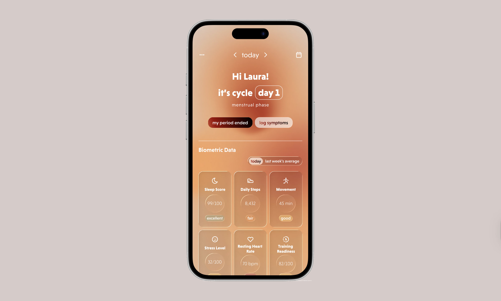
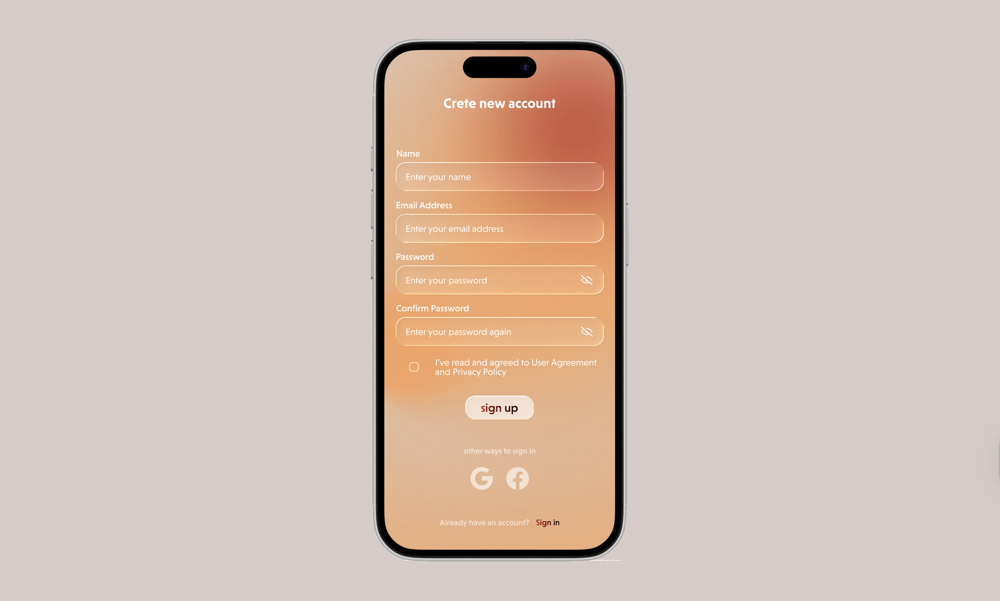
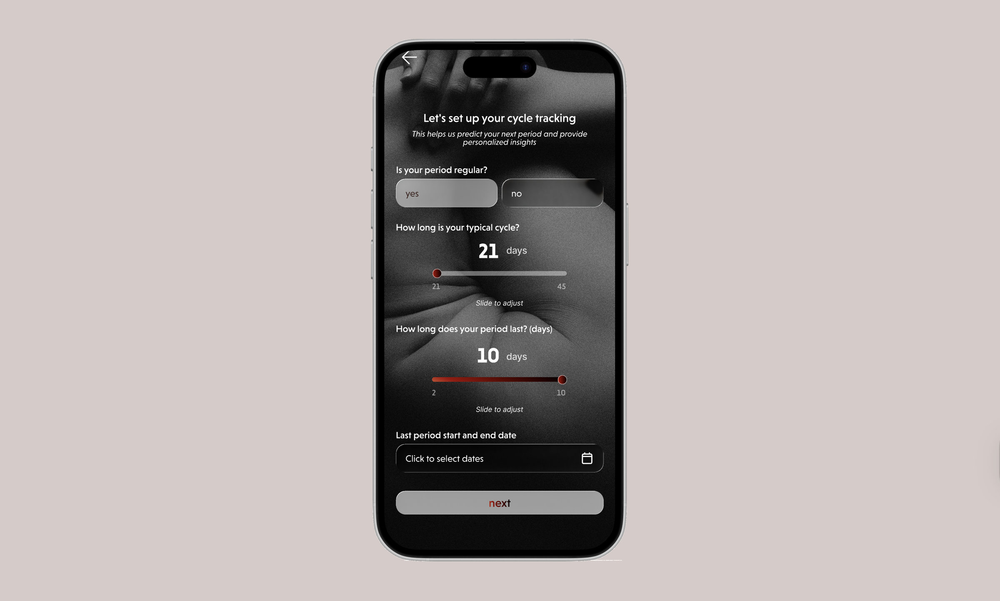
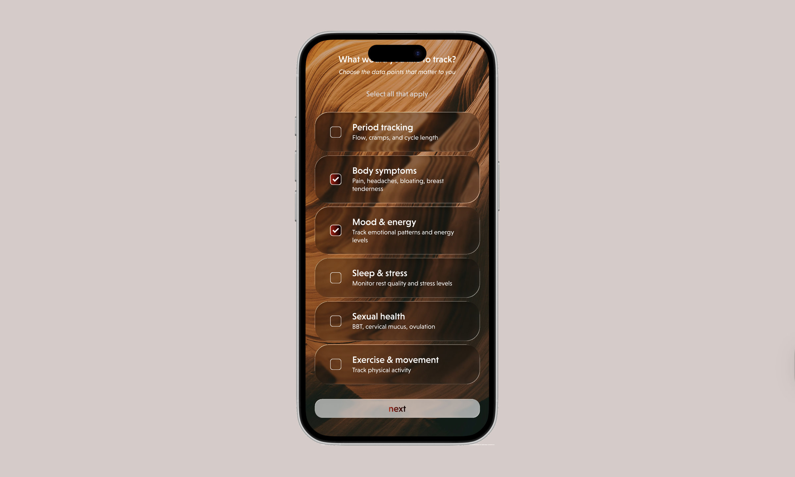
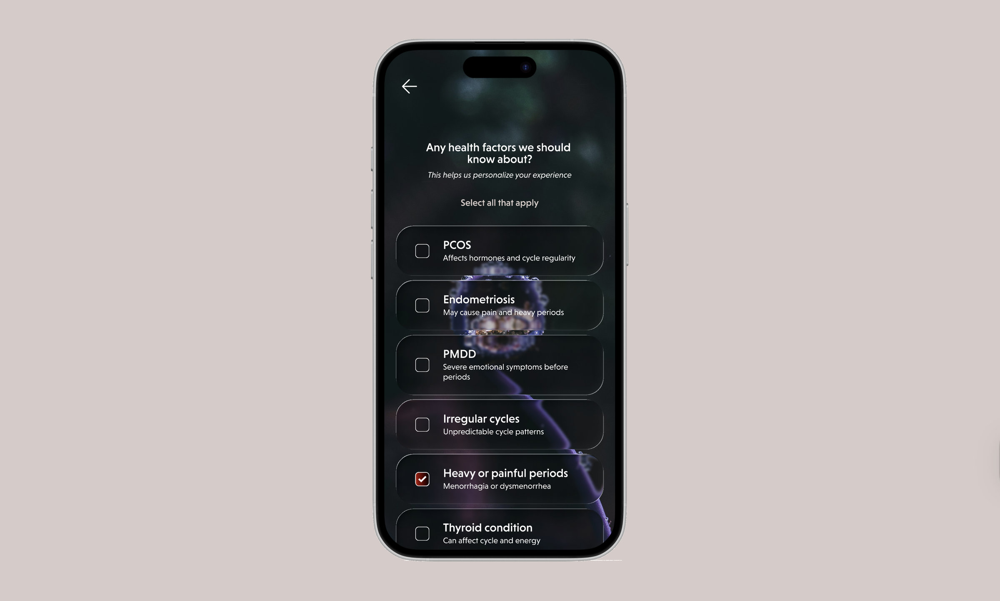
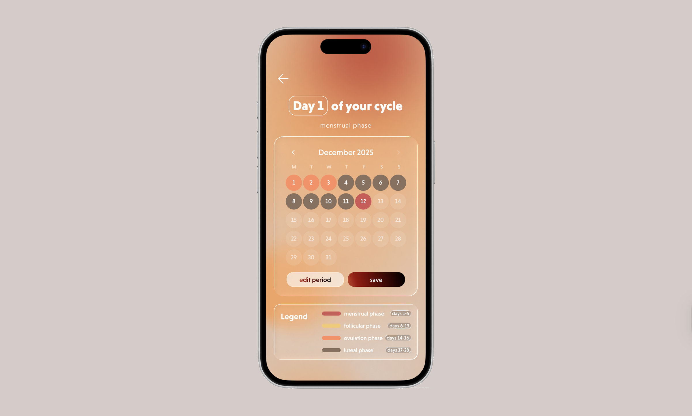
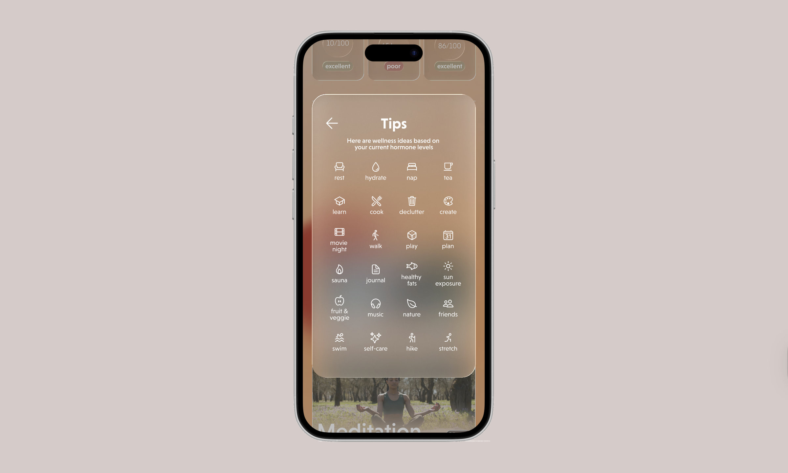
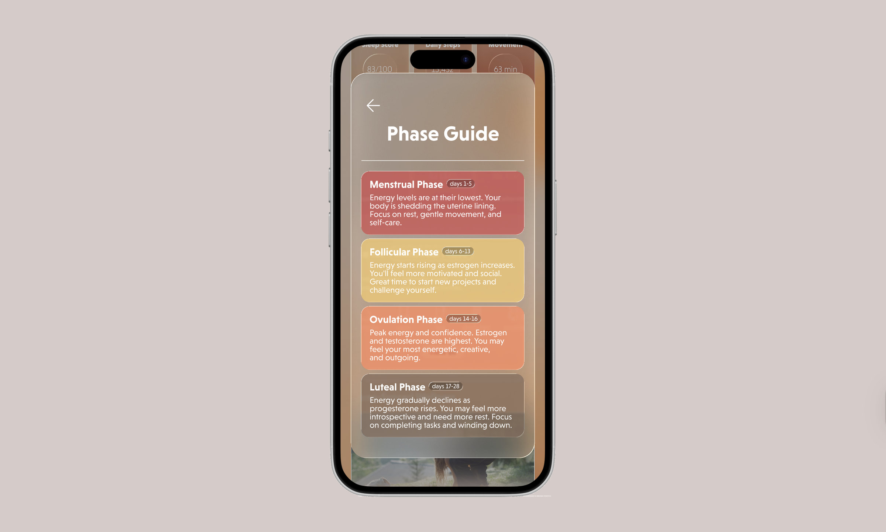
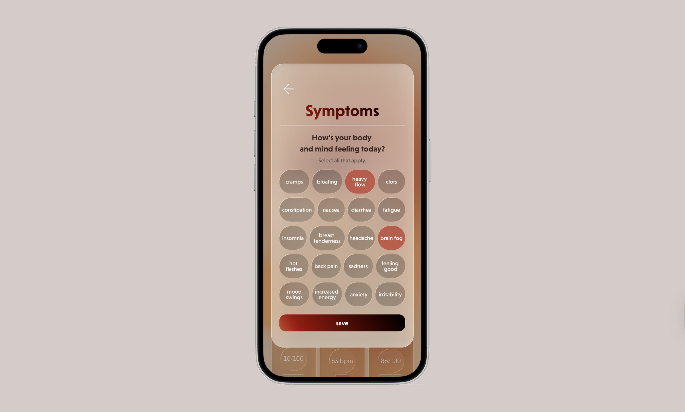
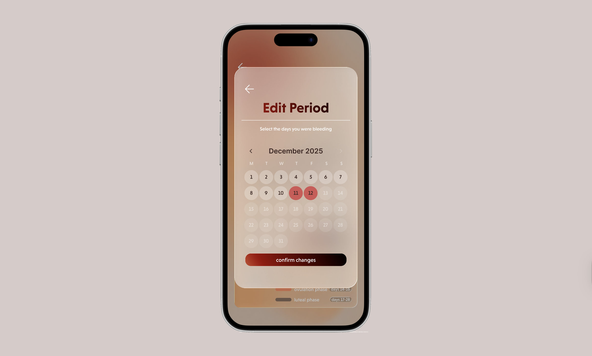
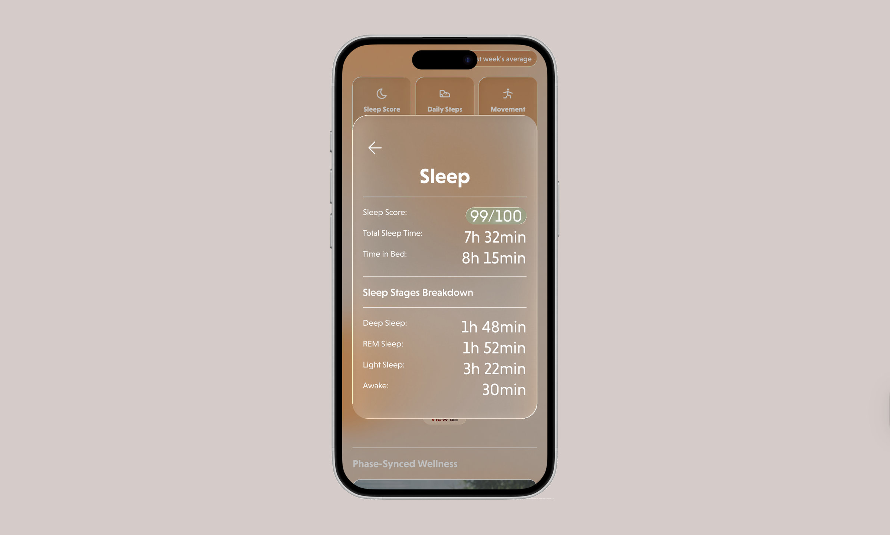
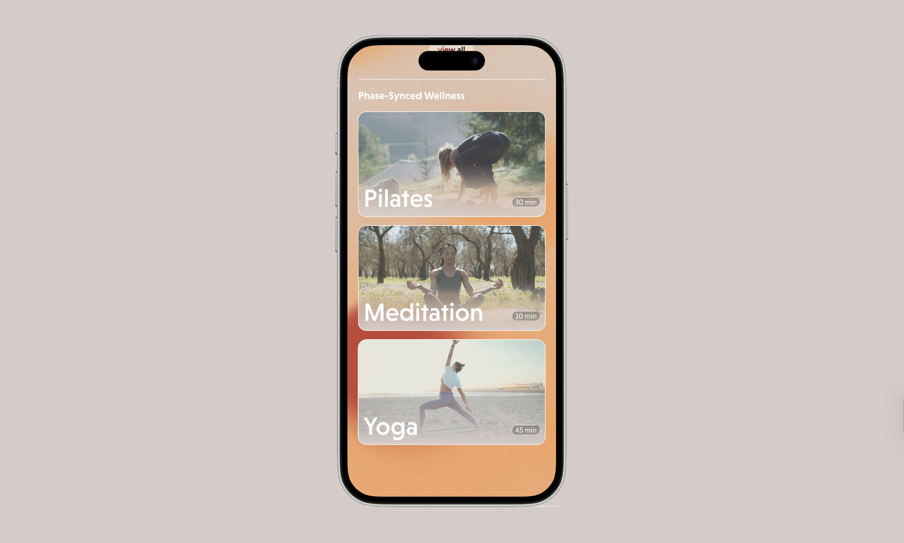
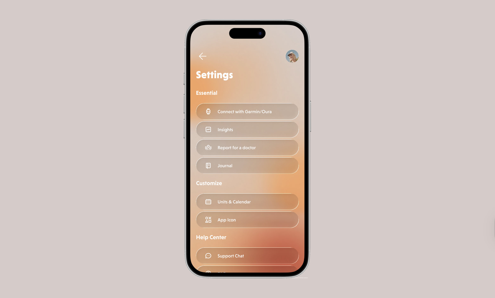
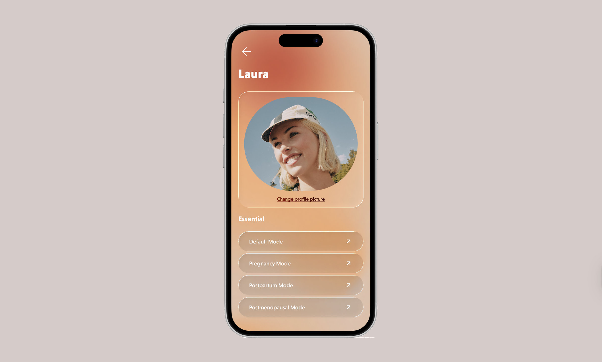
Concept
Many Gen Z women want to understand how their hormones affect them throughout the month, but most cycle tracking apps just focus on predicting periods. Wavia is different because it tailors wellness content to where users are in their cycle. Whether it's energizing yoga during the follicular phase or gentle meditation during the luteal phase, the app adapts to provide relevant support.
The app connects with Oura Ring and Garmin to track biometric data, making predictions more accurate and personal. Users can log how they're feeling each day and see patterns over time, making it easier to understand their body's rhythms and plan around them.
Design Approach
Wavia was designed to feel premium and warm at once. Frosted surfaces and subtle blur give it a modern, almost ethereal quality, warm oranges and reds carry the energy, and rounded edges and gradients keep it soft. The result should read as company through the month rather than one more health dashboard.
Production
The project was built entirely in Figma, from wireframes through to the final interactive prototype. The hard part was the glassmorphism: frosted layers lose contrast quickly, so type and controls had to be checked against every background they sit on. The UX and UI strategy decks worked out how the features fit together, from onboarding to daily tracking to viewing patterns over time.